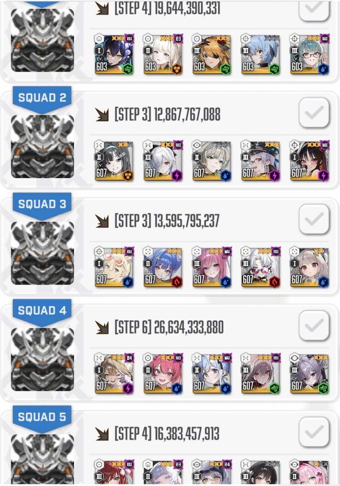
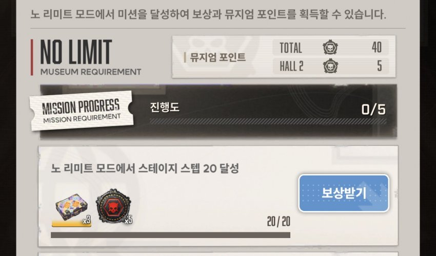

강화주간(코어데미지 증가) 없을때 깬거긴 한데
모더 코어가 어차피 금방 깨져서 큰 의미는 없을 듯
속저 없으니까 풍압 안넣어도 되고
파츠 파괴데미지가 생각보다 크기 때문에 홍길동패턴때 최대한 많이 깨준는것이 좋음
아크레인저 있으면 더 낮은 레벨에도 가능할듯
원본: https://gall.dcinside.com/mgallery/board/view/?id=gov&no=5734268
백업 시각:


강화주간(코어데미지 증가) 없을때 깬거긴 한데
모더 코어가 어차피 금방 깨져서 큰 의미는 없을 듯
속저 없으니까 풍압 안넣어도 되고
파츠 파괴데미지가 생각보다 크기 때문에 홍길동패턴때 최대한 많이 깨준는것이 좋음
아크레인저 있으면 더 낮은 레벨에도 가능할듯